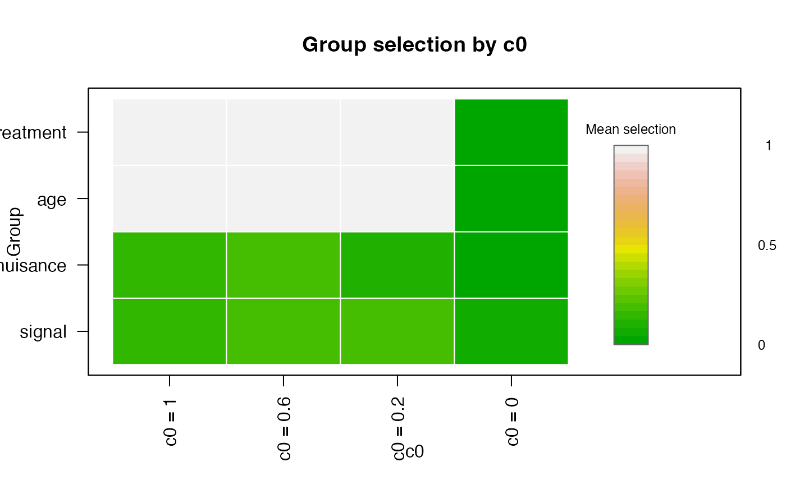

For dense spectra or finely sampled signals, SelectBoost
is often most useful when grouping is constrained by functional
structure instead of using a purely global correlation graph. The
end-to-end workflow still starts from raw curves and optional scalar
covariates.
Construct a spectral design object
library(SelectBoost.FDA)
data("spectra_example", package = "SelectBoost.FDA")
spectra <- fda_grid(
spectra_example$predictors$signal,
argvals = spectra_example$grid,
name = "signal",
unit = "nm"
)
nuisance <- fda_grid(
spectra_example$predictors$nuisance,
argvals = spectra_example$grid,
name = "nuisance",
unit = "nm"
)
design <- fda_design(
response = spectra_example$response,
predictors = list(signal = spectra, nuisance = nuisance),
scalar_covariates = spectra_example$scalar_covariates,
scalar_transform = fda_standardize(),
family = "gaussian"
)
head(selection_map(design))
#> feature predictor block position argval representation
#> signal.1 signal_1 signal signal 1 1100 grid
#> signal.2 signal_2 signal signal 2 1135.89743589744 grid
#> signal.3 signal_3 signal signal 3 1171.79487179487 grid
#> signal.4 signal_4 signal signal 4 1207.69230769231 grid
#> signal.5 signal_5 signal signal 5 1243.58974358974 grid
#> signal.6 signal_6 signal signal 6 1279.48717948718 grid
#> basis_type transform source_predictor source_representation
#> signal.1 <NA> identity signal grid
#> signal.2 <NA> identity signal grid
#> signal.3 <NA> identity signal grid
#> signal.4 <NA> identity signal grid
#> signal.5 <NA> identity signal grid
#> signal.6 <NA> identity signal grid
#> source_position_start source_position_end source_argval_start
#> signal.1 1 1 1100
#> signal.2 2 2 1135.89743589744
#> signal.3 3 3 1171.79487179487
#> signal.4 4 4 1207.69230769231
#> signal.5 5 5 1243.58974358974
#> signal.6 6 6 1279.48717948718
#> source_argval_end domain_start domain_end component unit
#> signal.1 1100 1100 1100 <NA> nm
#> signal.2 1135.89743589744 1135.89743589744 1135.89743589744 <NA> nm
#> signal.3 1171.79487179487 1171.79487179487 1171.79487179487 <NA> nm
#> signal.4 1207.69230769231 1207.69230769231 1207.69230769231 <NA> nm
#> signal.5 1243.58974358974 1243.58974358974 1243.58974358974 <NA> nm
#> signal.6 1279.48717948718 1279.48717948718 1279.48717948718 <NA> nm
#> feature_index basis_component domain_label
#> signal.1 1 <NA> 1100 nm
#> signal.2 2 <NA> 1135.89743589744 nm
#> signal.3 3 <NA> 1171.79487179487 nm
#> signal.4 4 <NA> 1207.69230769231 nm
#> signal.5 5 <NA> 1243.58974358974 nm
#> signal.6 6 <NA> 1279.48717948718 nmFit FDA-aware SelectBoost
The fitting chunk below is evaluated only when glmnet is
installed.
sb_fit <- fit_selectboost(
design,
selector = "glmnet",
selector_args = list(lambda_rule = "lambda.min"),
mode = "fast",
group_method = "threshold",
bandwidth = 3,
steps.seq = c(0.6, 0.2),
B = 10,
seed = 1
)
sb_fit
#> FDA SelectBoost result
#> family: gaussian
#> mode: fast
#> features: 82
#> groups: 4
#> c0 values: 4
summary(sb_fit)
#> FDA SelectBoost summary
#> family: gaussian
#> predictors: 4
#> mode: fast
#> features: 82
#> groups: 4
#> c0 values: 4
head(selection_map(sb_fit, c0 = colnames(sb_fit$feature_selection)[1]))
#> feature predictor block position argval representation
#> signal.1 signal_1 signal signal 1 1100 grid
#> signal.2 signal_2 signal signal 2 1135.89743589744 grid
#> signal.3 signal_3 signal signal 3 1171.79487179487 grid
#> signal.4 signal_4 signal signal 4 1207.69230769231 grid
#> signal.5 signal_5 signal signal 5 1243.58974358974 grid
#> signal.6 signal_6 signal signal 6 1279.48717948718 grid
#> basis_type transform source_predictor source_representation
#> signal.1 <NA> identity signal grid
#> signal.2 <NA> identity signal grid
#> signal.3 <NA> identity signal grid
#> signal.4 <NA> identity signal grid
#> signal.5 <NA> identity signal grid
#> signal.6 <NA> identity signal grid
#> source_position_start source_position_end source_argval_start
#> signal.1 1 1 1100
#> signal.2 2 2 1135.89743589744
#> signal.3 3 3 1171.79487179487
#> signal.4 4 4 1207.69230769231
#> signal.5 5 5 1243.58974358974
#> signal.6 6 6 1279.48717948718
#> source_argval_end domain_start domain_end component unit
#> signal.1 1100 1100 1100 <NA> nm
#> signal.2 1135.89743589744 1135.89743589744 1135.89743589744 <NA> nm
#> signal.3 1171.79487179487 1171.79487179487 1171.79487179487 <NA> nm
#> signal.4 1207.69230769231 1207.69230769231 1207.69230769231 <NA> nm
#> signal.5 1243.58974358974 1243.58974358974 1243.58974358974 <NA> nm
#> signal.6 1279.48717948718 1279.48717948718 1279.48717948718 <NA> nm
#> feature_index basis_component domain_label selection c0
#> signal.1 1 <NA> 1100 nm 0.0 c0 = 1
#> signal.2 2 <NA> 1135.89743589744 nm 0.0 c0 = 1
#> signal.3 3 <NA> 1171.79487179487 nm 0.0 c0 = 1
#> signal.4 4 <NA> 1207.69230769231 nm 0.0 c0 = 1
#> signal.5 5 <NA> 1243.58974358974 nm 0.2 c0 = 1
#> signal.6 6 <NA> 1279.48717948718 nm 0.0 c0 = 1
#> group_id group
#> signal.1 1 signal
#> signal.2 1 signal
#> signal.3 1 signal
#> signal.4 1 signal
#> signal.5 1 signal
#> signal.6 1 signal
selected(sb_fit, level = "group", c0 = colnames(sb_fit$feature_selection)[1])
#> predictor group_id group representation basis_type source_representation
#> 1 signal 1 signal grid grid
#> 2 nuisance 2 nuisance grid grid
#> 3 age 3 age scalar scalar
#> 4 treatment 4 treatment scalar scalar
#> n_features start_position end_position start_argval end_argval domain_start
#> 1 40 1 40 1100 2500 1100
#> 2 40 1 40 1100 2500 1100
#> 3 1 1 1 age age age
#> 4 1 1 1 treatment treatment treatment
#> domain_end c0 mean_selection max_selection selected_features
#> 1 2500 c0 = 1 0.1650 1 9
#> 2 2500 c0 = 1 0.1375 1 9
#> 3 age c0 = 1 1.0000 1 1
#> 4 treatment c0 = 1 1.0000 1 1
plot(
sb_fit,
type = "group",
value = "mean",
legend_title = "Mean selection",
palette = grDevices::terrain.colors(24)
)
The selection_map() method keeps the wavelength
information attached to each coefficient, which is the main advantage of
moving from raw matrices to FDA-native design objects.